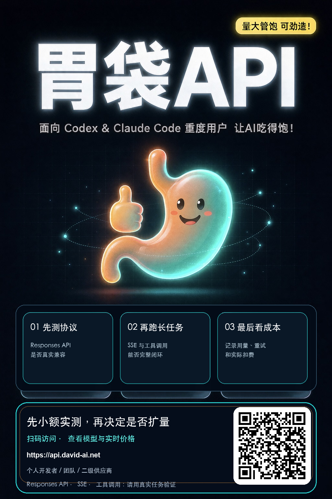

CODEX TROUBLESHOOTING · 15 MIN
Codex 接上 API 能回复，
为什么一跑仓库就断？
“你好”能返回，只能证明最短链路通了。真实编码任务还会经过连续流式输出、工具调用、长上下文、重试和计费。下面这套验收清单，用同一个小任务把问题一次分清。
先看结论
- 不要先买大额套餐；先用真实仓库和小额预算测试。
- 不要只看首句速度；记录完成率、重连次数、工具调用和实际扣费。
- 配置、模型名、协议和线路是四个不同问题，要分开验证。
一、先排除配置问题
OpenAI 官方 Codex 文档说明：自定义模型供应商由 base_url、wire API、认证方式和可选请求头组成；Provider 配置应放在用户级 ~/.codex/config.toml。项目内的 .codex/config.toml 不能覆盖 model_provider 和 model_providers 等认证相关设置。
model = "你的可用模型名"
model_provider = "your_gateway"
[model_providers.your_gateway]
name = "Your Gateway"
base_url = "https://你的网关地址/v1"
env_key = "OPENAI_API_KEY"
wire_api = "responses"安全提醒：API Key 只放在本机环境变量或安全凭据存储中。不要粘贴到网页、截图、公开仓库、Issue 或群聊。
二、15 分钟真实仓库验收
选一个能在十几分钟完成、失败也不会造成损失的小仓库。给不同线路使用完全相同的任务，才能比较。
- 只读理解：让 Codex 找到入口文件、测试命令和一个关键调用链。
- 跨文件小改：修改一个实现文件和一个测试文件，要求先说明计划。
- 执行验证：让它运行测试；失败时读取错误并修复一次。
- 记录数据：总耗时、是否完成、重连次数、工具调用是否闭环、输入输出用量和实际扣费。
- Responses API 能正常开始并持续返回事件
- SSE 流中途没有无故停住或重复片段
- 工具调用参数完整，结果回传后能继续推理
- 长任务失败后有明确错误，而不是无限等待
- 模型名、用量记录和最终扣费可以核对
三、按症状快速定位
401 / Unauthorized
先确认 Codex 启动进程确实能读取配置中 env_key 指向的环境变量，再检查 Key 是否属于当前网关。不要通过在终端打印完整 Key 来验证。
model not found
模型展示名不一定等于请求用的模型 ID。以网关控制台当前提供的精确模型名为准，修改后重新启动 Codex。
短问答正常，长任务断流
重点观察 SSE 空闲超时、上游流式事件兼容、工具调用返回和重试策略。只比较“首字很快”无法判断线路是否适合编码。
感觉便宜，账单却很快
不要只看标价倍率。用同一个任务对照输入、输出、缓存、重试次数和最终扣费；未完成的反复重试同样会消耗时间和额度。
四、需要一个候选线路做对照？
可以把胃袋 API 加入同一套验收，不要因为一张海报就直接扩量。先生成配置、跑完真实任务，再根据记录决定是否继续。

建议的决策门槛：连续完成 3 次同类任务，工具调用闭环，账单可核对，失败时有可诊断错误；达不到就不要扩量。
资料来源
配置原则参照 OpenAI 官方文档：Advanced Configuration。模型、网关和线路能力可能变化，请同时核对服务商控制台与实时状态。
先小额实测，不满意就停止。
完整网址：https://api.david-ai.net
查看模型与实时价格 →完整网址：https://api.david-ai.net